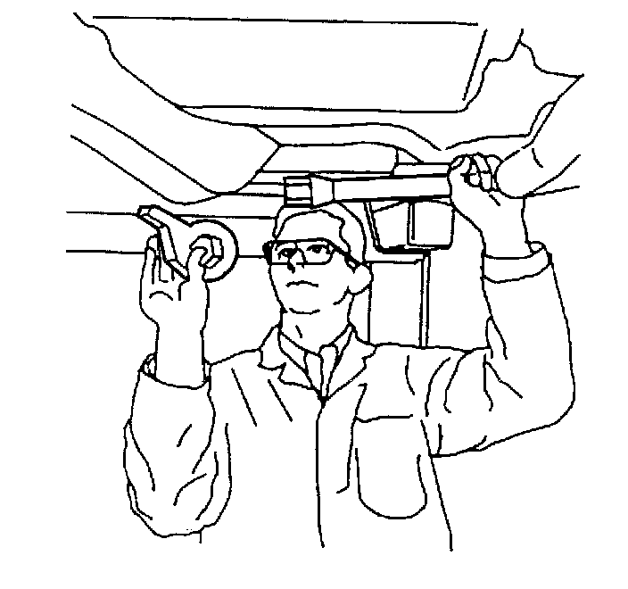

Torsion Bar: Service and Repair
Torsion Bar Replacement (2500 Series)
Tools Required
J 36202 Torsion Bar Unloading/Loading Tool
Removal Procedure
Notice: Use care when handling the torsion bars in order to avoid chipping or scratching the coating. Damage to the coating will result in premature failure of the torsion bars.
1. Raise and support the vehicle. Refer to Lifting and Jacking the Vehicle.
2. Install the J 36202 to the adjustment arm and the crossmember.
3. Increase the tension on the adjustment arm until the load is removed from the adjustment bolt and the adjuster nut.

Important: Mark the adjustment bolt and count the number of times that is required to remove the adjustment bolt.
4. Remove the adjustment bolt (3) and the adjuster nut (4).
5. Remove the adjustment bolt (3) and the adjuster nut (4).
6. Remove the J 36202, allowing the torsion bar to unload.

7. Remove the adjustment arm by sliding the torsion bar forward until the torsion bar clears the adjustment arm. Use your hand to support the adjustment arm as the adjustment arm releases from the torsion bar.
8. Remove the torsion bar crossmember bolts (4) from the weld nuts (1).
9. Remove the upper link mounting nuts (1) and the bolts (2).
10. Remove the torsion bar crossmember.
Important: Note the position of the torsion bars as the left and right bars are different.
11. Remove the torsion bars from the vehicle.
Installation Procedure
1. Install the torsion bars to the lower control arm.
2. Install the torsion bar crossmember.
Notice: Refer to Fastener Notice.
3. Install the torsion bar crossmember bolts (1) to the weld nuts (4).
Tighten the bolt to 95 N.m (70 lb ft).
4. Install the upper link mounting nuts and the bolts (3).
Tighten the nut to 95 N.m (70 lb ft).
5. While supporting the adjustment arm, slide the torsion bar rearward until the torsion bar fully engages the adjustment arm.
6. Install the J 36202 to the adjustment arm and the crossmember.
7. Increase the tension on the adjustment arm in order to load the torsion bar.
Important: Install the adjustment bolt the same amount of turns that were required to remove the bolt during removal.
8. Install the adjustment bolt (3) and the adjuster nut (4).
9. Install the adjustment bolt (3) and the adjuster nut (4).
10. Remove the J 36202 releasing the tension on the torsion bar until the load is taken up by the adjustment bolt.
11. Remove the safety stands.
12. Lower the vehicle.
13. Measure the Z height. Refer to Trim Height Inspection.